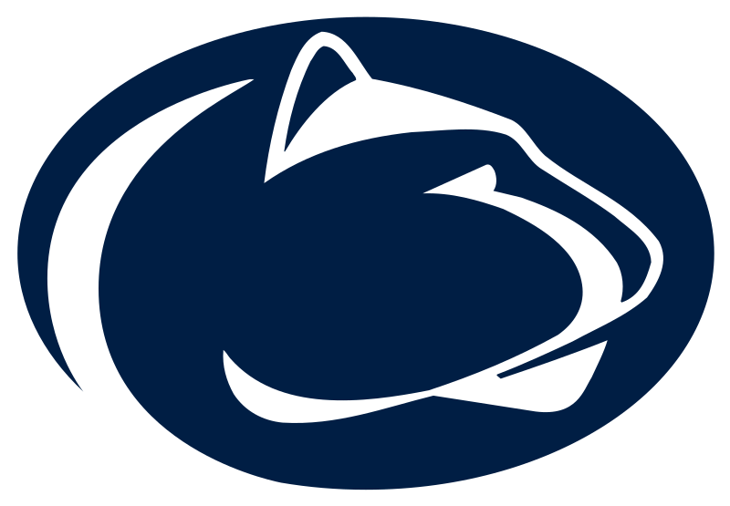

Henry Adams' Majors
I am currently a student at the Pennsylvania State University, in the College of Information Science and Technology.
Right now, I am a freshman, and as of Spring 2024, I am in my second semester. The major I'm currently taking is Human Centered Design and Development (HCDD).
For my career path, I plan to stick with the idea of HCDD. I would either like to continue programming, or being a UX designer.